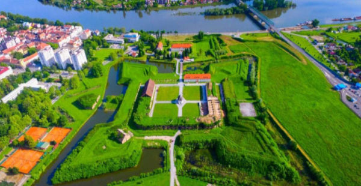
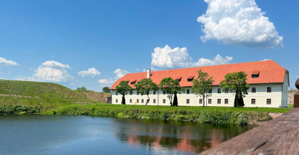
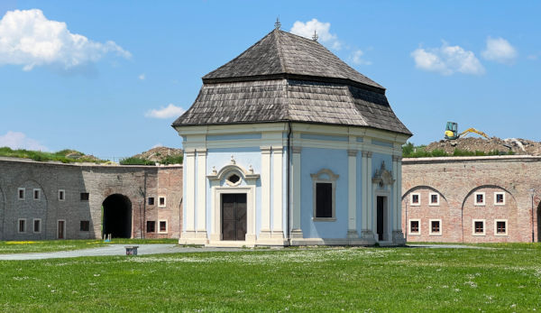
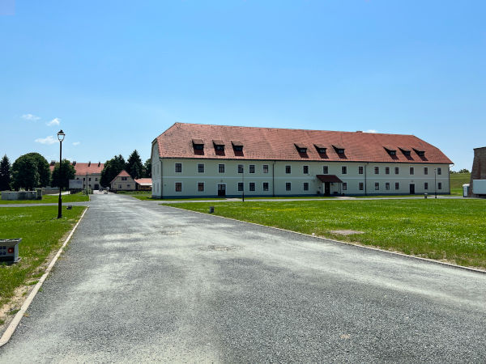

Tvrđava Slavonski Brod je povijesni utvrđeni kompleks smješten na desnoj obali rijeke Save u Slavonskom Brodu. Posjetite li Slavonski Brod, obavezno se morate prošetati od glavnog trga do, pet minuta laganog hoda udaljene tvrđave Brod. Radi se o baroknoj pograničnoj tvrđavi na rijeci Savi, koja je ujedno i spomenik nulte kategorije i znamenitost Slavonskog Broda. Tvrđava Brod, odnosno Festung, predstavlja najznačajniju povijesnu građevinu u Brodsko-posavskoj županiji. Njezina veličina, gotovo monumentalnost, čini je gotovo nestvarnom premda se nalazi u samom središtu Slavonskog Broda.
Ogromni opkopi, bastioni, kurtine, hornverk, kavalir i popratne zgrade prostirali su se na površini od dva kvadratna kilometra čime je tvrđava uvelike nadmašivala grad Brod koji se rasprostirao istočno od tvrđave. Vojnici u tvrđavi bili su potpuno autonomni, jer su skladišta tvrđave morala osigurati potpunu opskrbu u slučaju 45 dana opsade. Tvrđava nije nikad bila napadnuta niti su vojnici iz tvrđave ikad izveli napad na susjednu Bosnu i Osmansko Carstvo. Služila je samo kao sredstvo odvraćanja. Danas je ova građevina u funkciji razvoja kulture. U njoj su smješteni gradska uprava, glazbena škola, klasična gimnazija, tradicijski obrti, jedinstveni muzej tambure te Galerija Ružić koja je, po značaju, druga galerija moderne umjetnosti u Hrvatskoj.
Unutrašnji, središnji dio tvrđave, kvadratnog je oblika, a čine ga četiri bastiona povezana bedemima. Bastioni-peterokutna utvrđenja građena od zemljanih naboja, a s vanjske strane ozidana ciglom, organizirani su za posljednji otpor od neprijatelja i s njih se mogao nadzirati prostor ispred tvrđave, braniti vanjske bedeme i susjedni bastion. Vanjski obrambeni pojas činili su revelini - trokutasta utvrđenja koja štite glavne bedeme i onemogućavaju neprijatelju pristup tvrđavi. Svi su od zemljanog naboja, s vanjske strane ozidani ciglom. Brodska tvrđava je naglim razvojem opsadne tehnike izgubila već od sredine 19. stoljeća svoju obrambenu zadaću. Od tada se Brod na Savi počinje intenzivno razvijati, a stari drveni Brod nestaje. Devastacija tvrđave Brod nastavlja se tijekom 20. stoljeća. Pojedine objekte ruši sama vojska kao neupotrebljive, a prije napušteni i neodrživi objekti sami se urušavaju i propadaju. Nakon 1945. godine sve do Domovinskog rata devedesetih godina 20. stoljeća tvrđava služi za smještaj vojnika Jugoslavenske narodne armije. Danas tvrđava Brod, spomenik nulte kategorije i jedinstven i monumentalan primjer vojne fortifikacijske arhitekture 18. stoljeća u Slavoniji, pripada gradu Slavonskom Brodu koji je odlučno krenuo u njezinu revitalizaciju.






